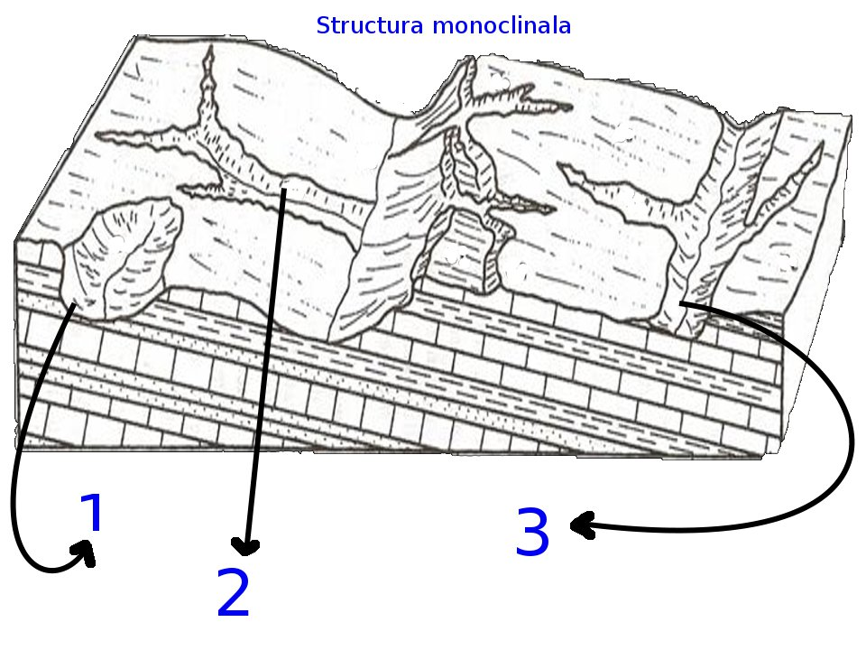

Relieful Structural
O expeditie interactiva in lumea geografica
Un proiect realizat de către Serban David și Udrea Yannis Andrei



Incepe Aventura
Derulați, apăsați, sau faceți clic pentru a interacționa